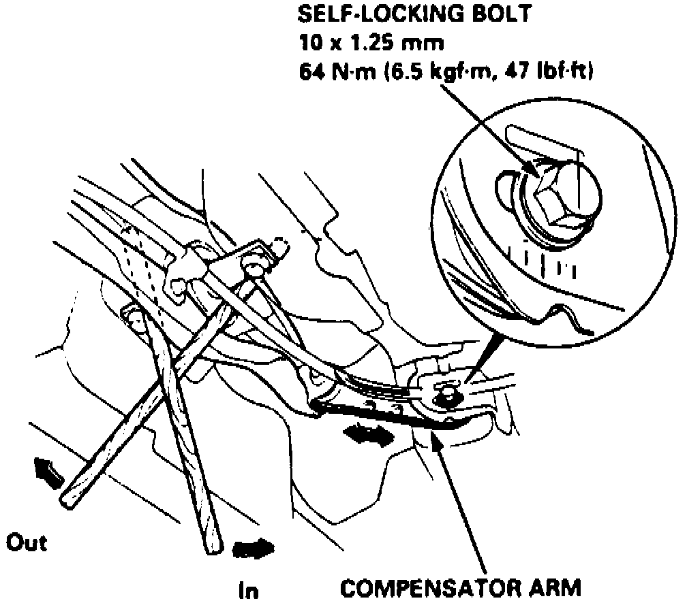

Rear
Computerized four wheel alignment equipment should be used when inspecting rear toe.1. Ensure parking brake is not engaged, then measure difference in toe measurements with wheels pointed straight ahead.
Fig. 6 Rear Toe-In Adjustment:

2. Note positions of self-locking bolts on left and right compensator arms, Fig. 6, then loosen bolts and slide compensator arm as necessary to obtain correct toe-in.
3. Tighten self-locking bolts to specifications, Fig. 6.